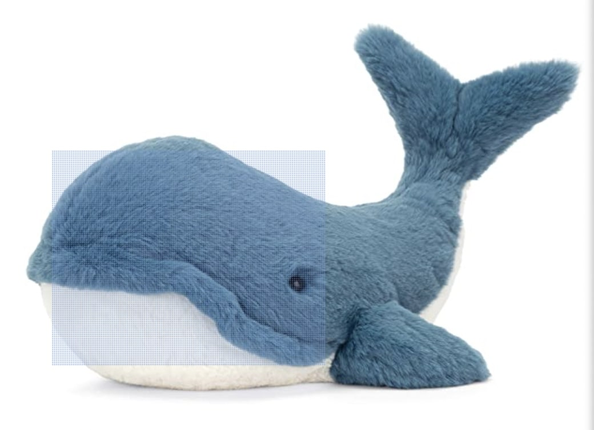

关于鲸鱼
1 演化
2 分类
2.1 须鲸
2.2 齿鲸
3 解剖
3.1 头部
4 繁殖及哺乳
5 捕鲸
6 文化
7 我鲸鱼🐳总是爱你
wahle lover
演化
鲸鱼陆上祖先之一的走鲸及其骨骼化石
所有的鲸下目生物都是陆生动物中偶蹄目的后裔，而鲸下目与偶蹄目在生物分类上又属于鲸与河马所属的鲸偶蹄目。鲸也是从陆生哺乳动物经过水生的适应过程而回到海洋的，此过程大约发生在距今5200万－8300万年的始新世。
鲸，海豚和江豚，同属偶蹄目，和它们两趾的有蹄动物血缘最近的近亲是河马，大约在4000万年前分化，古生物学家相信首先由巴基鲸进化成走鲸等水陆两栖生活的古鲸类，再进化成龙王鲸等完全在水中生活的鲸类。
在3400万年前就分化成齿鲸和须鲸两个小目。

分类
须鲸
须鲸口内无齿，上颌长有帘幕般的角质鲸须，滤食磷虾、头足类等。体积庞大，体长至少 6 米。须鲸有两个鼻孔，换气时可以喷出两股水柱。
须鲸种类较少，现存约 15 种，分为 4 科：露脊鲸科、新须鲸科（或 小露脊鲸科）、须鲸科、灰鲸科，其中蓝鲸体积庞大；露脊鲸行动缓慢、头大体胖；座头鲸体短臂长，常在近岸活动；小须鲸体小吻尖。
齿鲸
齿鲸口内无须，但有牙齿，多呈圆锥状，主要以乌贼、鱼类为食。鼻孔只有一个。体型差异较大，从 1 米长的侏海豚到 18 米长的抹香鲸不等，通常雄性大于雌性。
齿鲸种类较多，现存约 75 种，分为 9 科：抹香鲸科、小抹香鲸科（侏儒抹香鲸科）、恒河豚科（淡水豚科）、喙鲸科（剑吻鲸科）、亚河豚科、拉河豚科、海豚科、鼠海豚科、一角鲸科，另有 1 个单型的白𬶨豚科，被认为已于 21 世纪初灭绝。
解剖
鲸鱼用肺呼吸，是温血动物，体温大约为37℃，心跳每分钟只有10次[1]。其幼崽由哺乳喂养，还有少许毛发。一些种类可以潜到极深的深度，它们往往拥有厚重的脂肪层，或叫作鲸脂，能在冰冷的水中保持温暖。
鲸的体形是梭状的。它的前肢形成鳍，后肢完全退化，尾巴变成尾鳍，可以上下摆动，是游泳的主要器官。有些种类还有背鳍，用来平衡身体。肋骨有10～20对，胃分四个室，肾脏多为瘤状。
特别值得瞩目的是蓝鲸。它是世界上现存的最大动物，体长可达30米，重达180吨。
鲸鱼寿命一般为 40-90 年，因物种而异。
头部
鲸的眼睛很小，没有泪腺，视力较差。耳朵在水下环境有其特殊的适应性，没有外耳壳，外耳道也很细，但听觉灵敏，能感受超声波，靠回声定位来寻找食物、联系同伴或逃避敌害。鼻孔有一或两个，在头的上部，俗称喷气孔。一般鼻孔位置越靠后，进化程度越。
繁殖及哺乳
雄鲸睾丸位于腹腔内，利用输精管将精子排入雌性体内。完成受精过程后，精子和卵子在母鲸体内结合。雌鲸子宫为双角形，有一对乳房，位于生殖裂两侧的乳沟内，有细长的乳头。
母鲸通常生一只幼鲸。养育期较长，某些种类多于一年。在此期间，母子之间会建立非常强的关系。一些鲸的成熟期很晚，大约要七到十年。鲸的生殖器官在游泳时避免阻力而缩回体内。母鲸在海水中通过喷射乳汁入幼崽口内来喂养幼鲸，而幼鲸会自动将海水及奶水分离。
捕鲸
主条目：捕鲸
捕鲸是年代很久的行业。《新唐书》卷三六《五行志三》：“开成二年三月壬申，有大鱼长六丈，自海入淮，至濠州招义，民杀之。”又《新唐书》卷二一九《北狄列传·黑水靺鞨》记载：“拂涅，亦称大拂涅，开元、天宝间八来，献鲸睛……”。鲸肉可食，脂肪可制油，用于医药和其他工业。鲸鱼的种类比较多，其中有不少种类的鲸鱼濒临灭绝，但有些种类的鲸鱼数量比较多。
目前捕鲸的国家有挪威、冰岛和日本，以及法罗群岛、西伯利亚、美国（阿拉斯加）和北加拿大的一些土著部落。关于捕鲸问题，反对的一方主要是一些环保组织如绿色和平、世界自然基金会等。但是，近年来澳大利亚、巴西等国政府也介入反对捕鲸。
文化
人类很早就对鲸鱼有深刻的描写。崔豹《古今注》：“鲸，海鱼也，大者长千里，小者数十丈。”“其雌曰鲵，大者亦长千里。”并有大量的文章，如《庄子》曰：“吞舟之鱼失水，则蝼蚁而能制之。”吞舟之鱼就是大鱼，也就是鲸鱼。张衡《西京赋》有所谓“鲸鱼失流而蹉跎”。任昉《述异记》：“南海有珠，即鲸鱼目瞳，夜可以鉴，谓之夜光。”
《淮南子》还有“鲸鱼死而彗星出”之说。《论衡·乱龙》亦言：“夫东风至酒湛溢，鲸鱼死彗星出，天道自然，非人事也。”《太平御览》卷七及卷九三八引《春秋考异邮》都说到“鲸鱼死而彗星出”，卷八七五引《春秋考异邮》作“鲸鱼死彗星合”。
《太平御览》卷八七〇引《三秦记》称“始皇墓中燃鲸鱼膏为灯。”
在西方，最早的一个故事乃是《圣经》里关于约拿的记载：水手们把约拿抛入大海，以便平息眼看就要把船毁掉的狂风恶浪。约拿被一头鲸鱼吞下，三天后，又被它吐在陆地上。不过经文并没有明确说是鲸鱼，只说是一条大鱼。《圣经》里所说的另一种动物利维坦，也很有可能是鲸鱼。至中世纪，鲸鱼的记载见诸于斯堪的纳维亚和冰岛的文献。其中最重要的一部，当属13世纪中叶的《王室宝鉴》，这本书描写了生活在冰岛四周海域的各种鲸鱼。[2]
Polaris，I whale always love you🐳